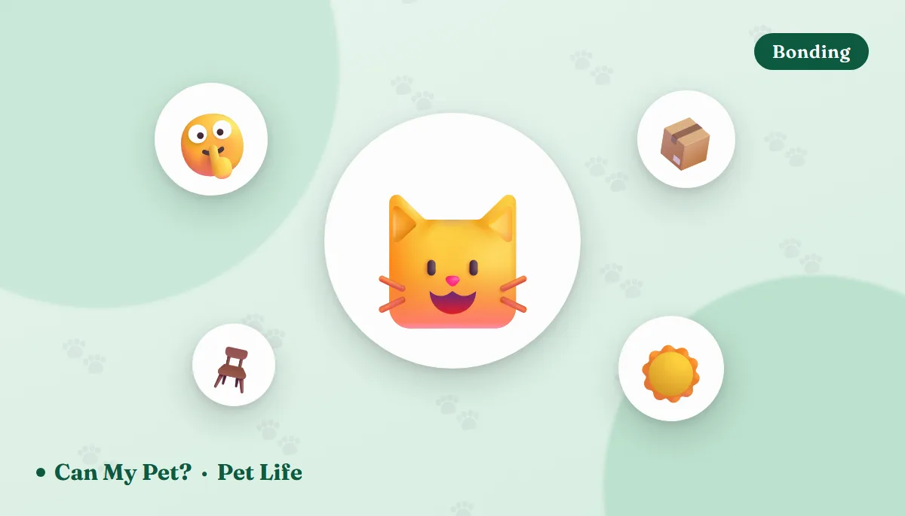

10 Things Cats Secretly Love (and 5 They Quietly Hate)

Cats have a reputation for being unreadable, which is a little unfair — they're actually broadcasting constantly, just in a quieter register than dogs. The trouble is that a lot of what we do to show affection reads differently from their side of the room. A long cuddle can feel like being trapped. A "clean-smelling" litter box can be the reason a cat starts going on the bath mat. Here's what vets and feline behaviorists say cats genuinely love, and the well-meant habits they mostly just tolerate.
10 things cats secretly love
1. The slow blink Communication
Narrow your eyes at your cat, hold it, then let the lids drift half-closed. Studies on cat–human communication have found cats are more likely to slow blink back at a person who blinks first — and more likely to approach a stranger's outstretched hand after that exchange. It's the closest thing cats have to a handshake, and it costs you nothing. More on reading the rest of the signals in our cat body language guide.
2. Somewhere high to sit Security
Cats are both predator and prey, and elevation solves both problems: a good view of the room and distance from anything unpredictable at floor level. A cat tree, a cleared shelf, or the top of a wardrobe genuinely lowers stress in multi-cat and multi-pet homes. Vertical space is one of the cheapest upgrades you can make to a cat's world.
3. Warmth — more than you'd think Comfort
A cat's thermoneutral zone sits meaningfully higher than ours, roughly in the 86–97°F range, which is why they hunt down sunbeams, laptops, and radiators with such determination. A warmed bed near a heat source, or simply a sunny window perch, isn't a luxury — it's a cat doing basic thermal maths.
4. Being scratched where the scent glands are Touch
Cheeks, chin, the base of the ears, and along the jaw are where cats carry scent glands, and it's exactly where most of them want to be rubbed. When your cat headbutts you or rubs their face on your leg, they're depositing scent — marking you as part of the safe furniture. Meet them there instead of at the belly and you'll get a much better reception.
5. A spotlessly clean litter box Hygiene
The standard veterinary guideline is one box per cat plus one spare, placed in different parts of the home, scooped at least daily. Big, uncovered, unscented, and away from the noisy washing machine wins for most cats. Litter box aversion is one of the most common reasons cats are surrendered — and it's very often a housekeeping problem, not a behavior problem.
6. Hunting that ends in a catch Enrichment
Cats are built for short, explosive hunting sequences: stalk, chase, pounce, catch, kill-bite, eat. A laser pointer delivers the first three and then simply stops, which can leave some cats frustrated. Wand toys that end with a real catch, followed by a treat or a meal, complete the loop. Our boredom busters for cats guide has a stack of ideas that take five minutes.
7. Running water and a well-placed bowl Hydration
Descended from desert-dwelling ancestors, cats have a famously weak thirst drive and are prone to urinary problems when chronically underhydrated. Many prefer moving water from a fountain, a wide shallow bowl that doesn't press on their whiskers, and water placed away from the food bowl. If you want to check what else belongs in the bowl, our food checker covers hundreds of everyday foods — including whether milk is the good idea it looks like (it usually isn't).
8. Predictable routine — and predictable people Comfort
Cats are creatures of pattern, and stable feeding times, quiet handling, and a home where furniture and litter boxes stay put all reduce baseline stress. Feline behaviorists consistently link unpredictability — new pets, moves, chaotic schedules — to stress-related problems like over-grooming and inappropriate urination.
9. Boxes, tunnels, and small enclosed spaces Security
It's a meme, but it's also documented: shelter cats given hiding boxes acclimatize faster and show lower stress scores than cats without them. An enclosed space with one exit is a defensible position — a cardboard box on the floor is, to your cat, a small fortress with excellent value for money.
10. Your company, on their terms Bonding
The aloof-cat stereotype doesn't hold up well. Attachment research using the classic "secure base" test found most cats show secure attachment to their owner, comparable to what's seen in dogs and human infants. What differs is the negotiation: cats want to choose when contact starts and when it stops. Let them initiate and most will spend far more time near you, not less. If you're curious about the personality behind it, try cat personality types.
5 things cats quietly hate (or just put up with)
1. Belly rubs Overstimulation
A cat rolling over is showing you trust, not requesting a stomach massage. The belly is vulnerable and packed with sensitive hair follicles, so touching it often triggers a defensive grab-and-kick — the classic "she was purring and then she bit me" moment. Stick to the head end.
2. Being picked up and held Restraint
Plenty of cats accept being carried; far fewer actually enjoy it. Losing contact with the ground removes their exit route, which is the one thing cats value most. If your cat goes stiff, flattens their ears, or starts flicking the tail tip, that's a request to be put down before it escalates.
3. Scented litter and strong household smells Aversion
A cat's nose has roughly 200 million scent receptors to our 5 million, so the floral litter that smells "fresh" to you can be overwhelming to them. Citrus sprays, strong cleaners, and heavily perfumed litter are common, easily-fixed causes of a cat quietly deciding the box isn't worth it. Fine, unscented clumping litter is the general favorite.
4. Staring, looming, and loud surprises Stress
A hard, unbroken stare is a threat display in cat language — which is exactly why the visiting cat in a room full of people heads straight for the one person ignoring them. Sudden noise, being scooped up from behind, or a hand appearing over their head from above all read as ambush. This, incidentally, is the real mechanism behind the cucumber videos: it's a startle response, and it isn't kind.
5. Food and water bowls jammed together (and whisker-deep dishes) Frustration
In the wild, cats don't drink where they eat, and many pet cats keep the same instinct — separating the bowls often measurably increases water intake. Deep, narrow dishes that press on the whiskers with every bite bother some cats too. Wide and shallow, in a quiet corner, away from the litter box, is the low-effort fix.
Frequently asked questions
What is a cat slow blink and does it really mean anything?
A slow blink is a long, soft narrowing of the eyes that cats use as a low-arousal, non-threatening signal. Research on cat–human communication has found that cats are more likely to slow blink back at a person who slow blinks first, and are more likely to approach a stranger's outstretched hand after that exchange. It's one of the easiest ways to tell a cat you mean no harm.
Why do most cats hate belly rubs?
A cat's belly is a vulnerable area with dense, highly sensitive hair follicles. When a cat rolls over and shows it, that's usually a display of trust and relaxation rather than an invitation to touch. Most cats prefer petting around the scent glands on the cheeks, chin, and base of the ears, and will swat or grab if you go for the stomach.
How many litter boxes should I have?
The widely used veterinary guideline is one box per cat plus one extra, spread across different areas of the home rather than lined up in one room. Most cats also prefer a large, uncovered box with unscented clumping litter, scooped at least once a day.
Do cats actually like being alone?
Cats are more independent than dogs, but they're not solitary by default — many form strong attachments to their people and show signs of separation-related stress after long absences. What most cats want is company on their own terms: nearby presence and the freedom to opt in or out of contact.
By the CanMyPet Editorial Team · Reviewed against ASPCA, AAFP/International Cat Care environmental-needs guidance and published feline behavior research · Published August 2026.